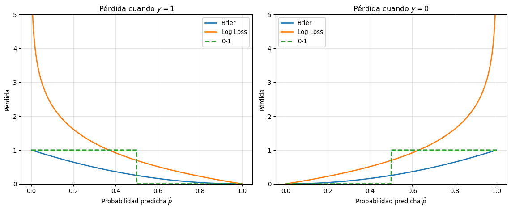
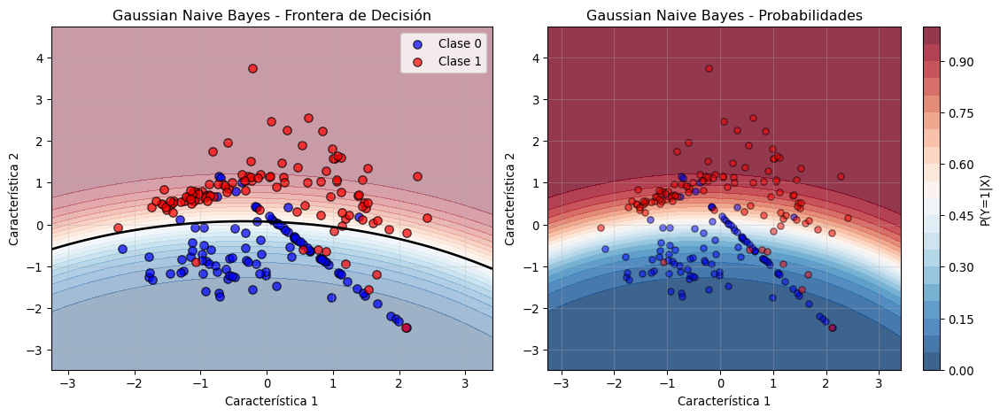
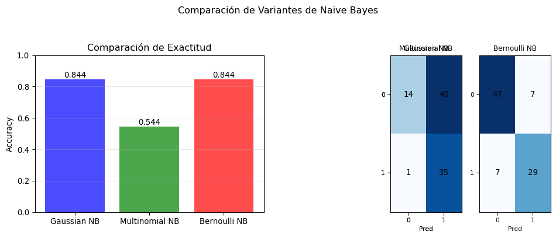
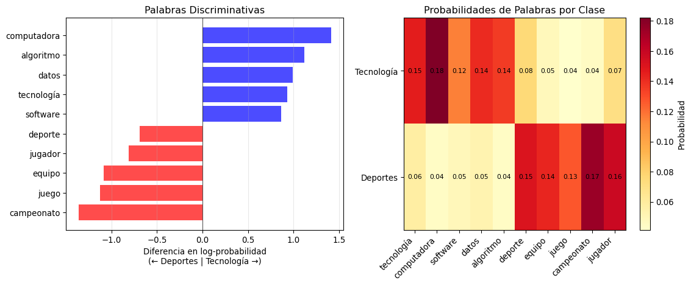
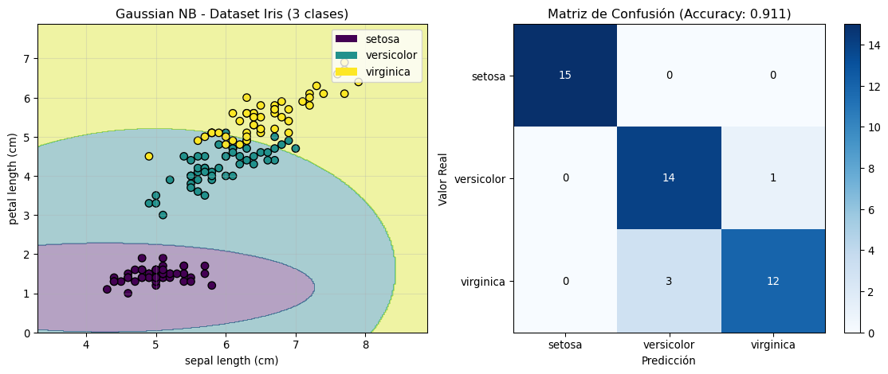
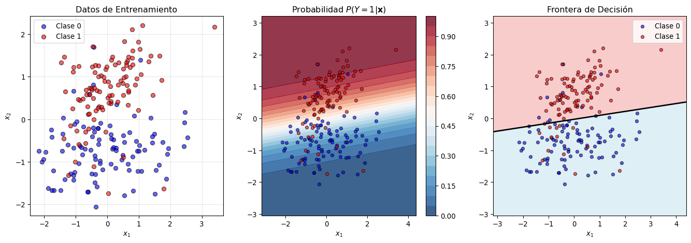
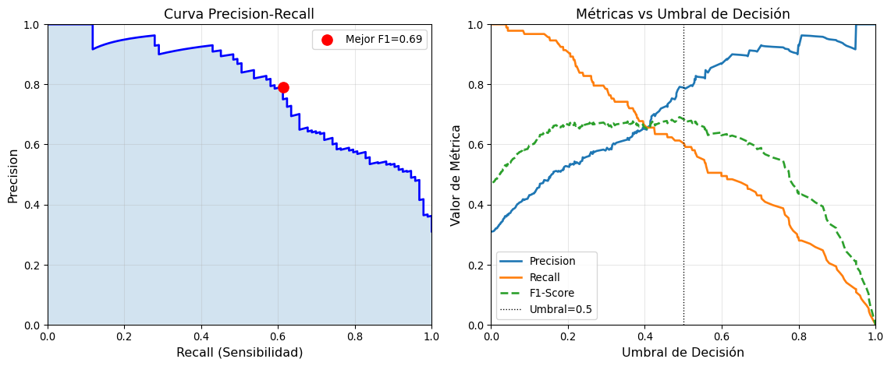
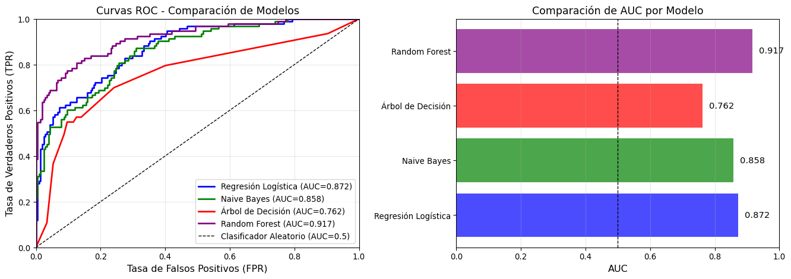
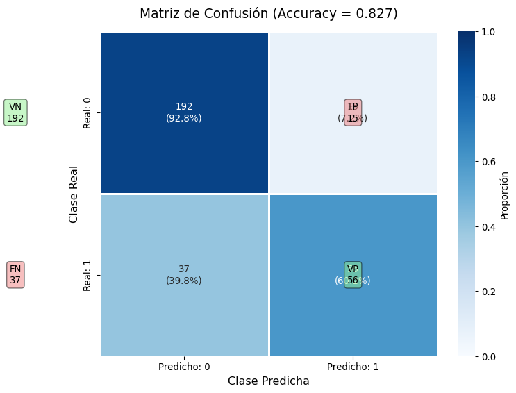
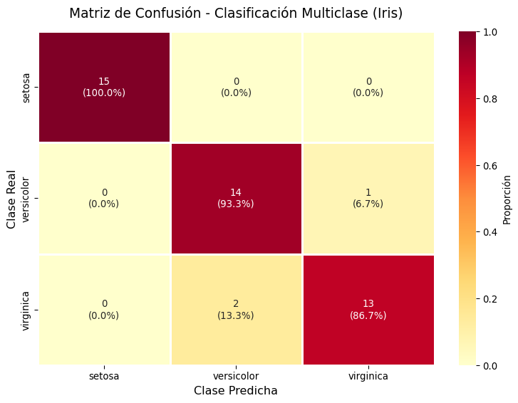

Clasificación
Introducción al Problema de Clasificación
En los capítulos anteriores hemos trabajado con problemas de regresión, donde la variable respuesta \(Y\) es cuantitativa (continua). En este capítulo estudiaremos los problemas de clasificación, donde la variakbble respuesta \(Y\) es cualitativa (categórica o discreta).
Definición Formal
Un problema de clasificación consiste en asignar una observación \(\mathbf{x} = (x_1, x_2, ..., x_p)\) a una de \(K\) clases o categorías posibles. Formalmente:
- Entrada: Un vector de características \(\mathbf{x} \in \mathbb{R}^p\)
- Salida: Una etiqueta de clase \(y \in \mathcal{C} = \{C_1, C_2, ..., C_K\}\)
Donde \(\mathcal{C}\) es el conjunto finito de clases posibles.
Ejemplos de Problemas de Clasificación
- Clasificación binaria (\(K=2\)):
- Detección de spam en correos electrónicos (spam/no spam)
- Diagnóstico médico (enfermo/sano)
- Aprobación de crédito (aprobado/rechazado)
- Clasificación multiclase (\(K>2\)):
- Reconocimiento de dígitos escritos a mano (0-9)
- Clasificación de tipos de flores (setosa/versicolor/virginica)
- Categorización de noticias (deportes/política/tecnología/etc.)
Objetivo del Aprendizaje
El objetivo es aprender una función de clasificación \(f: \mathbb{R}^p \rightarrow \mathcal{C}\) que minimice el error de clasificación esperado:
\[\mathbb{E}[L(Y, f(\mathbf{X}))]\]
Donde \(L\) es una función de pérdida. La función de pérdida más común es la pérdida 0-1:
\[L_{0-1}(y, \hat{y}) = \begin{cases} 0 & \text{si } y = \hat{y} \\ 1 & \text{si } y \neq \hat{y} \end{cases}\]
Funciones de Pérdida en Clasificación
Aunque la pérdida 0-1 es intuitiva y directamente relacionada con la tasa de error, presenta limitaciones importantes: no es diferenciable y no proporciona información sobre la confianza de las predicciones. Por esto, en la práctica se utilizan funciones de pérdida alternativas que trabajan con probabilidades.
Clasificación Binaria: Pérdidas Probabilísticas
Para clasificación binaria, donde \(y \in \{0, 1\}\), consideramos predicciones probabilísticas \(\hat{p} = P(\hat{Y} = 1 | \mathbf{x})\). Las funciones de pérdida más importantes son:
Pérdida de Brier (Brier Score)
La pérdida de Brier o pérdida cuadrática mide el error cuadrático medio entre las probabilidades predichas y los valores reales:
\[L_{\text{Brier}}(y, \hat{p}) = (y - \hat{p})^2\]
Para un conjunto de \(n\) observaciones:
\[\text{Brier Score} = \frac{1}{n} \sum_{i=1}^{n} (y_i - \hat{p}_i)^2\]
Propiedades:
- Rango: \([0, 1]\) (menor es mejor)
- Es una regla de puntuación propia (proper scoring rule)
- Penaliza fuertemente predicciones confiadas pero incorrectas
- Se puede descomponer en: calibración + refinamiento
Pérdida Logarítmica (Log Loss o Entropía Cruzada Binaria)
La pérdida logarítmica mide la distancia entre la distribución verdadera y la predicha usando la divergencia de Kullback-Leibler:
\[L_{\text{log}}(y, \hat{p}) = -[y \log(\hat{p}) + (1-y) \log(1-\hat{p})]\]
Equivalentemente: \[L_{\text{log}}(y, \hat{p}) = \begin{cases} -\log(\hat{p}) & \text{si } y = 1 \\ -\log(1-\hat{p}) & \text{si } y = 0 \end{cases}\]
Para un conjunto de observaciones:
\[\text{Log Loss} = -\frac{1}{n} \sum_{i=1}^{n} [y_i \log(\hat{p}_i) + (1-y_i) \log(1-\hat{p}_i)]\]
Propiedades:
- Rango: \([0, \infty)\) (menor es mejor)
- También es una regla de puntuación propia
- Penaliza infinitamente predicciones completamente incorrectas (\(\hat{p} = 0\) cuando \(y = 1\))
- Es la función objetivo en regresión logística
Comparación de Funciones de Pérdida
Reglas de Puntuación Propias
Una regla de puntuación propia (proper scoring rule) es una función de pérdida que incentiva al modelo a reportar sus verdaderas probabilidades. Formalmente, una función \(S(p, y)\) es propia si:
\[\mathbb{E}_{Y \sim p^*}[S(p^*, Y)] \leq \mathbb{E}_{Y \sim p^*}[S(p, Y)]\]
Donde \(p^*\) es la distribución verdadera. Tanto la pérdida de Brier como la log loss son propias, mientras que la pérdida 0-1 no lo es.
Ventajas y Desventajas
Pérdida de Brier:
- ✓ Interpretación directa como MSE de probabilidades
- ✓ Acotada en \([0,1]\)
- ✓ Menos sensible a predicciones extremas incorrectas
- ✗ Menos utilizada en optimización de modelos
Pérdida Logarítmica:
- ✓ Base teórica sólida (teoría de información)
- ✓ Función objetivo natural para muchos modelos (logística, redes neuronales)
- ✓ Diferenciable y convexa
- ✗ No acotada superiormente
- ✗ Muy sensible a predicciones extremas incorrectas
Modelos para Clasificación Binaria
Clasificador de Bayes para el Caso Binario
El clasificador de Bayes es el clasificador óptimo teórico que minimiza el error de clasificación. Para el caso binario con clases \(\{0, 1\}\), clasifica según:
\[\hat{y}(\mathbf{x}) = \begin{cases} 1 & \text{si } P(Y = 1 | \mathbf{X} = \mathbf{x}) > 0.5 \\ 0 & \text{si } P(Y = 1 | \mathbf{X} = \mathbf{x}) \leq 0.5 \end{cases}\]
O más generalmente, con un umbral \(\tau\):
\[\hat{y}(\mathbf{x}) = \mathbb{1}[P(Y = 1 | \mathbf{X} = \mathbf{x}) > \tau]\]
Estimación mediante el Teorema de Bayes
Usando el teorema de Bayes:
\[P(Y = k | \mathbf{X} = \mathbf{x}) = \frac{P(\mathbf{X} = \mathbf{x} | Y = k) \cdot P(Y = k)}{P(\mathbf{X} = \mathbf{x})}\]
Donde:
- \(P(Y = k)\) es la probabilidad a priori de la clase \(k\)
- \(P(\mathbf{X} = \mathbf{x} | Y = k)\) es la verosimilitud de observar \(\mathbf{x}\) dado que pertenece a la clase \(k\)
- \(P(\mathbf{X} = \mathbf{x})\) es la evidencia (constante de normalización)
Como \(P(\mathbf{X} = \mathbf{x})\) es igual para todas las clases, la decisión se basa en:
\[\hat{y} = \arg\max_k P(\mathbf{X} = \mathbf{x} | Y = k) \cdot P(Y = k)\]
Naive Bayes: Simplificando el Problema
El problema principal del clasificador de Bayes es estimar \(P(\mathbf{X} = \mathbf{x} | Y = k)\) en alta dimensión. Con \(p\) características, necesitamos estimar la distribución conjunta de todas las variables, lo cual es computacionalmente intratable cuando \(p\) es grande.
El clasificador Naive Bayes resuelve este problema mediante una asunción de independencia condicional: asume que las características son condicionalmente independientes dada la clase:
\[P(\mathbf{X} = \mathbf{x} | Y = k) = P(x_1, x_2, ..., x_p | Y = k) = \prod_{j=1}^{p} P(x_j | Y = k)\]
Esta asunción, aunque “ingenua” (naive), simplifica enormemente el cálculo y funciona sorprendentemente bien en la práctica.
Tipos de Naive Bayes
Dependiendo del tipo de características, existen diferentes variantes:
1. Gaussian Naive Bayes (características continuas)
Asume que las características siguen una distribución normal dentro de cada clase:
\[P(x_j | Y = k) = \frac{1}{\sqrt{2\pi\sigma_{jk}^2}} \exp\left(-\frac{(x_j - \mu_{jk})^2}{2\sigma_{jk}^2}\right)\]
Donde \(\mu_{jk}\) y \(\sigma_{jk}^2\) son la media y varianza de la característica \(j\) en la clase \(k\).
2. Multinomial Naive Bayes (características discretas/conteos)
Utilizado para datos de conteo (ej. frecuencia de palabras en clasificación de texto):
\[P(\mathbf{x} | Y = k) = \frac{N_k!}{\prod_j x_j!} \prod_{j=1}^{p} \theta_{jk}^{x_j}\]
Donde \(\theta_{jk}\) es la probabilidad de la característica \(j\) en la clase \(k\).
3. Bernoulli Naive Bayes (características binarias)
Para características binarias (presencia/ausencia):
\[P(\mathbf{x} | Y = k) = \prod_{j=1}^{p} \theta_{jk}^{x_j} (1-\theta_{jk})^{1-x_j}\]
Ventajas y Desventajas de Naive Bayes
Ventajas:
- ✓ Rápido de entrenar y predecir
- ✓ Funciona bien con pocos datos de entrenamiento
- ✓ Maneja naturalmente múltiples clases
- ✓ Robusto ante características irrelevantes
- ✓ Proporciona estimaciones de probabilidad
Desventajas:
- ✗ La asunción de independencia es frecuentemente violada
- ✗ Puede dar estimaciones de probabilidad sesgadas
- ✗ Sensible a la maldición de la dimensionalidad con Gaussian NB
Ejemplos en Python
1. Ejemplo Básico: Gaussian Naive Bayes
Comenzamos con un ejemplo simple de clasificación binaria usando Gaussian Naive Bayes:
import numpy as np
import matplotlib.pyplot as plt
from sklearn.datasets import make_classification
from sklearn.model_selection import train_test_split
from sklearn.naive_bayes import GaussianNB
from sklearn.metrics import accuracy_score, confusion_matrix
import pandas as pd
# Generar datos sintéticos para clasificación binaria
np.random.seed(42)
X, y = make_classification(
n_samples=300,
n_features=2, # 2 características para visualización fácil
n_informative=2, # Ambas características son informativas
n_redundant=0, # Sin características redundantes
n_clusters_per_class=2, # 2 grupos por clase
flip_y=0.05, # 5% de ruido en las etiquetas
class_sep=0.8, # Separación entre clases
random_state=42
)
# Dividir en conjunto de entrenamiento (70%) y prueba (30%)
X_train, X_test, y_train, y_test = train_test_split(
X, y, test_size=0.3, random_state=42
)
print("Dimensiones de los datos:")
print(f" Entrenamiento: {X_train.shape}")
print(f" Prueba: {X_test.shape}")Dimensiones de los datos:
Entrenamiento: (210, 2)
Prueba: (90, 2)# Crear y entrenar el modelo Gaussian Naive Bayes
gnb = GaussianNB()
gnb.fit(X_train, y_train)
# Realizar predicciones
y_pred = gnb.predict(X_test)
y_proba = gnb.predict_proba(X_test)
# Evaluar el modelo
accuracy = accuracy_score(y_test, y_pred)
print(f"Exactitud (Accuracy): {accuracy:.3f}")
# Matriz de confusión
cm = confusion_matrix(y_test, y_pred)
print("\nMatriz de Confusión:")
print(pd.DataFrame(cm,
columns=['Predicho 0', 'Predicho 1'],
index=['Real 0', 'Real 1']))
# Parámetros aprendidos por el modelo
print("\n" + "=" * 50)
print("PARÁMETROS APRENDIDOS")
print("=" * 50)
print(f"\nProbabilidades a priori (prior):")
print(f" P(Y=0) = {gnb.class_prior_[0]:.3f}")
print(f" P(Y=1) = {gnb.class_prior_[1]:.3f}")
print(f"\nMedias de cada característica por clase:")
for i, clase in enumerate([0, 1]):
print(f" Clase {clase}: μ₁={gnb.theta_[i, 0]:.3f}, μ₂={gnb.theta_[i, 1]:.3f}")
print(f"\nVarianzas de cada característica por clase:")
for i, clase in enumerate([0, 1]):
print(f" Clase {clase}: σ²₁={gnb.var_[i, 0]:.3f}, σ²₂={gnb.var_[i, 1]:.3f}")Exactitud (Accuracy): 0.844
Matriz de Confusión:
Predicho 0 Predicho 1
Real 0 46 8
Real 1 6 30
==================================================
PARÁMETROS APRENDIDOS
==================================================
Probabilidades a priori (prior):
P(Y=0) = 0.481
P(Y=1) = 0.519
Medias de cada característica por clase:
Clase 0: μ₁=-0.072, μ₂=-0.693
Clase 1: μ₁=0.048, μ₂=0.726
Varianzas de cada característica por clase:
Clase 0: σ²₁=0.872, σ²₂=0.544
Clase 1: σ²₁=1.275, σ²₂=0.6542. Visualización de la Frontera de Decisión
# Función auxiliar para visualizar fronteras de decisión
def visualizar_clasificador(X, y, classifier, title):
"""
Visualiza la frontera de decisión de un clasificador
Parámetros:
- X: características (n_samples, 2)
- y: etiquetas (n_samples,)
- classifier: modelo entrenado
- title: título del gráfico
"""
h = 0.02 # Tamaño del paso en la malla
# Crear una malla de puntos para evaluar el clasificador
x_min, x_max = X[:, 0].min() - 1, X[:, 0].max() + 1
y_min, y_max = X[:, 1].min() - 1, X[:, 1].max() + 1
xx, yy = np.meshgrid(np.arange(x_min, x_max, h),
np.arange(y_min, y_max, h))
# Predecir probabilidades para cada punto de la malla
Z = classifier.predict_proba(np.c_[xx.ravel(), yy.ravel()])[:, 1]
Z = Z.reshape(xx.shape)
# Crear la visualización
plt.figure(figsize=(12, 5))
# Panel 1: Datos y frontera
plt.subplot(1, 2, 1)
plt.contourf(xx, yy, Z, alpha=0.4, cmap='RdBu_r', levels=20)
plt.contour(xx, yy, Z, levels=[0.5], colors='black', linewidths=2)
plt.scatter(X[y==0, 0], X[y==0, 1], c='blue', edgecolors='black',
s=50, label='Clase 0', alpha=0.7)
plt.scatter(X[y==1, 0], X[y==1, 1], c='red', edgecolors='black',
s=50, label='Clase 1', alpha=0.7)
plt.xlabel('Característica 1')
plt.ylabel('Característica 2')
plt.title(f'{title} - Frontera de Decisión')
plt.legend()
plt.grid(True, alpha=0.3)
# Panel 2: Mapa de probabilidades
plt.subplot(1, 2, 2)
contour = plt.contourf(xx, yy, Z, levels=20, cmap='RdBu_r', alpha=0.8)
plt.colorbar(contour, label='P(Y=1|X)')
plt.scatter(X[y==0, 0], X[y==0, 1], c='blue', edgecolors='black',
s=30, alpha=0.5)
plt.scatter(X[y==1, 0], X[y==1, 1], c='red', edgecolors='black',
s=30, alpha=0.5)
plt.xlabel('Característica 1')
plt.ylabel('Característica 2')
plt.title(f'{title} - Probabilidades')
plt.grid(True, alpha=0.3)
plt.tight_layout()
plt.show()
# Visualizar nuestro modelo entrenado
visualizar_clasificador(X_train, y_train, gnb, 'Gaussian Naive Bayes')
3. Comparación de Variantes de Naive Bayes
Ahora comparemos las tres variantes principales de Naive Bayes:
from sklearn.naive_bayes import MultinomialNB, BernoulliNB
from sklearn.preprocessing import MinMaxScaler
# Preparar diferentes versiones de los datos para cada variante
# 1. Gaussian NB: usa los datos originales
X_gaussian = X_train.copy()
# 2. Multinomial NB: necesita valores no negativos (frecuencias)
scaler = MinMaxScaler()
X_multinomial = scaler.fit_transform(X_train) + 0.1 # Asegurar valores positivos
# 3. Bernoulli NB: necesita valores binarios
X_bernoulli = (X_train > np.median(X_train, axis=0)).astype(float)
print("Forma de los datos para cada variante:")
print(f" Gaussian: {X_gaussian.shape} - Valores continuos")
print(f" Multinomial: {X_multinomial.shape} - Valores positivos")
print(f" Bernoulli: {X_bernoulli.shape} - Valores binarios")
# Mostrar ejemplos de los primeros 3 datos
print("\nEjemplo de transformación (primeras 3 muestras, primera característica):")
print(f" Original: {X_gaussian[:3, 0]}")
print(f" Multinomial: {X_multinomial[:3, 0]}")
print(f" Bernoulli: {X_bernoulli[:3, 0]}")Forma de los datos para cada variante:
Gaussian: (210, 2) - Valores continuos
Multinomial: (210, 2) - Valores positivos
Bernoulli: (210, 2) - Valores binarios
Ejemplo de transformación (primeras 3 muestras, primera característica):
Original: [-0.98221929 1.48740486 0.62625557]
Multinomial: [0.37211974 0.9009729 0.71656365]
Bernoulli: [0. 1. 1.]# Entrenar las tres variantes
modelos = {
'Gaussian NB': (GaussianNB(), X_gaussian),
'Multinomial NB': (MultinomialNB(), X_multinomial),
'Bernoulli NB': (BernoulliNB(), X_bernoulli)
}
resultados = {}
for nombre, (modelo, X_train_variant) in modelos.items():
# Entrenar
modelo.fit(X_train_variant, y_train)
# Preparar datos de prueba según la variante
if nombre == 'Gaussian NB':
X_test_variant = X_test
elif nombre == 'Multinomial NB':
X_test_variant = scaler.transform(X_test) + 0.1
else: # Bernoulli
X_test_variant = (X_test > np.median(X_train, axis=0)).astype(float)
# Predecir
y_pred = modelo.predict(X_test_variant)
# Guardar resultados
resultados[nombre] = {
'modelo': modelo,
'accuracy': accuracy_score(y_test, y_pred),
'y_pred': y_pred
}
print(f"\n{nombre}:")
print(f" Accuracy: {resultados[nombre]['accuracy']:.3f}")
Gaussian NB:
Accuracy: 0.844
Multinomial NB:
Accuracy: 0.544
Bernoulli NB:
Accuracy: 0.844# Visualizar comparación de resultados
fig, axes = plt.subplots(1, 2, figsize=(10, 4))
# Gráfico de barras de accuracy
nombres = list(resultados.keys())
accuracies = [resultados[n]['accuracy'] for n in nombres]
bars = axes[0].bar(nombres, accuracies, color=['blue', 'green', 'red'], alpha=0.7)
axes[0].set_ylabel('Accuracy')
axes[0].set_title('Comparación de Exactitud')
axes[0].set_ylim([0, 1])
axes[0].grid(True, alpha=0.3, axis='y')
# Añadir valores en las barras
for bar, acc in zip(bars, accuracies):
height = bar.get_height()
axes[0].text(bar.get_x() + bar.get_width()/2., height,
f'{acc:.3f}', ha='center', va='bottom')
# Matrices de confusión
from sklearn.metrics import confusion_matrix
axes[1].axis('off')
for i, nombre in enumerate(nombres):
cm = confusion_matrix(y_test, resultados[nombre]['y_pred'])
# Crear subtabla
ax_sub = plt.subplot2grid((1, 6), (0, 4 + i*2//3), colspan=2//3 + 1)
ax_sub.imshow(cm, cmap='Blues', aspect='auto')
ax_sub.set_title(f'{nombre.split()[0]} NB', fontsize=9)
# Añadir texto en cada celda
for (i, j), val in np.ndenumerate(cm):
ax_sub.text(j, i, str(val), ha='center', va='center')
if i == 0:
ax_sub.set_ylabel('Real', fontsize=8)
ax_sub.set_xlabel('Pred', fontsize=8)
ax_sub.set_xticks([0, 1])
ax_sub.set_yticks([0, 1])
ax_sub.tick_params(labelsize=8)
plt.suptitle('Comparación de Variantes de Naive Bayes', y=1.05)
plt.tight_layout()
plt.show()
4. Ejemplo Práctico: Clasificación de Texto
# Simular un conjunto de datos de texto
# Imaginemos que tenemos documentos con conteo de palabras
print("=" * 60)
print("EJEMPLO: CLASIFICACIÓN DE DOCUMENTOS")
print("=" * 60)
# Crear datos simulados de texto
np.random.seed(42)
n_docs = 100
n_palabras = 10
# Nombres de las "palabras" para mejor interpretación
palabras = ['tecnología', 'computadora', 'software', 'datos', 'algoritmo',
'deporte', 'equipo', 'juego', 'campeonato', 'jugador']
# Crear matriz de frecuencias
# Clase 0: documentos sobre tecnología (más palabras 0-4)
# Clase 1: documentos sobre deportes (más palabras 5-9)
X_text = np.random.poisson(1, (n_docs, n_palabras))
y_text = np.array([0] * 50 + [1] * 50) # 50 docs de cada clase
# Sesgar frecuencias según la clase
X_text[:50, :5] *= 3 # Docs de tecnología: más palabras técnicas
X_text[50:, 5:] *= 3 # Docs de deportes: más palabras deportivas
# Crear DataFrame para mejor visualización
df_text = pd.DataFrame(X_text, columns=palabras)
df_text['clase'] = y_text
df_text['tipo_documento'] = df_text['clase'].map({0: 'Tecnología', 1: 'Deportes'})
print("\nPrimeros 5 documentos:")
print(df_text.head())
print("\nEstadísticas por clase:")
print(df_text.groupby('tipo_documento')[palabras].mean().round(2))============================================================
EJEMPLO: CLASIFICACIÓN DE DOCUMENTOS
============================================================
Primeros 5 documentos:
tecnología computadora software datos algoritmo deporte equipo \
0 3 6 0 0 9 2 0
1 0 3 0 0 3 0 1
2 9 0 3 0 3 1 1
3 0 0 0 0 3 1 0
4 0 9 0 0 0 2 0
juego campeonato jugador clase tipo_documento
0 0 0 1 0 Tecnología
1 0 1 0 0 Tecnología
2 1 0 5 0 Tecnología
3 1 1 2 0 Tecnología
4 0 0 3 0 Tecnología
Estadísticas por clase:
tecnología computadora software datos algoritmo deporte \
tipo_documento
Deportes 1.16 1.02 1.00 1.12 1.02 3.12
Tecnología 2.82 2.94 2.22 2.46 2.28 1.12
equipo juego campeonato jugador
tipo_documento
Deportes 3.0 2.76 3.12 3.36
Tecnología 0.9 0.68 0.92 1.20 # Dividir datos de texto
X_text_train, X_text_test, y_text_train, y_text_test = train_test_split(
X_text, y_text, test_size=0.3, random_state=42, stratify=y_text
)
# Entrenar Multinomial Naive Bayes (ideal para datos de conteo)
mnb_text = MultinomialNB(alpha=1.0) # alpha: parámetro de suavizado Laplace
mnb_text.fit(X_text_train, y_text_train)
# Predicciones
y_pred_text = mnb_text.predict(X_text_test)
y_proba_text = mnb_text.predict_proba(X_text_test)
# Evaluación
print("Resultados de Clasificación de Texto:")
print(f"Accuracy: {accuracy_score(y_text_test, y_pred_text):.3f}")
# Matriz de confusión
cm_text = confusion_matrix(y_text_test, y_pred_text)
print("\nMatriz de Confusión:")
print(pd.DataFrame(cm_text,
columns=['Pred Tecnología', 'Pred Deportes'],
index=['Real Tecnología', 'Real Deportes']))
# Importancia de las palabras
print("\nImportancia de palabras por clase (log-probabilidades):")
log_probs = mnb_text.feature_log_prob_
importancia_df = pd.DataFrame(log_probs.T,
columns=['Tecnología', 'Deportes'],
index=palabras)
print(importancia_df.round(3))Resultados de Clasificación de Texto:
Accuracy: 0.833
Matriz de Confusión:
Pred Tecnología Pred Deportes
Real Tecnología 14 1
Real Deportes 4 11
Importancia de palabras por clase (log-probabilidades):
Tecnología Deportes
tecnología -1.924 -2.854
computadora -1.703 -3.112
software -2.162 -3.028
datos -1.960 -2.950
algoritmo -1.997 -3.112
deporte -2.582 -1.894
equipo -3.034 -1.947
juego -3.188 -2.064
campeonato -3.108 -1.748
jugador -2.653 -1.843# Visualizar importancia de palabras
fig, axes = plt.subplots(1, 2, figsize=(12, 5))
# Diferencia en log-probabilidades (palabras más discriminativas)
diff_log_prob = log_probs[0] - log_probs[1] # Tecnología - Deportes
indices_sorted = np.argsort(diff_log_prob)
# Panel 1: Palabras más importantes para cada clase
y_pos = np.arange(len(palabras))
axes[0].barh(y_pos, diff_log_prob[indices_sorted],
color=['red' if x < 0 else 'blue' for x in diff_log_prob[indices_sorted]],
alpha=0.7)
axes[0].set_yticks(y_pos)
axes[0].set_yticklabels([palabras[i] for i in indices_sorted])
axes[0].set_xlabel('Diferencia en log-probabilidad\n(← Deportes | Tecnología →)')
axes[0].set_title('Palabras Discriminativas')
axes[0].grid(True, alpha=0.3, axis='x')
axes[0].axvline(x=0, color='black', linestyle='-', linewidth=0.5)
# Panel 2: Matriz de probabilidades
im = axes[1].imshow(np.exp(log_probs), cmap='YlOrRd', aspect='auto')
axes[1].set_xticks(range(len(palabras)))
axes[1].set_xticklabels(palabras, rotation=45, ha='right')
axes[1].set_yticks([0, 1])
axes[1].set_yticklabels(['Tecnología', 'Deportes'])
axes[1].set_title('Probabilidades de Palabras por Clase')
plt.colorbar(im, ax=axes[1], label='Probabilidad')
# Añadir valores en la matriz
for i in range(2):
for j in range(len(palabras)):
text = axes[1].text(j, i, f'{np.exp(log_probs[i, j]):.2f}',
ha="center", va="center", color="black", fontsize=8)
plt.tight_layout()
plt.show()
5. Ejemplo con Dataset Real: Iris
from sklearn.datasets import load_iris
# Cargar dataset Iris
iris = load_iris()
X_iris = iris.data[:, [0, 2]] # Usar solo 2 características para visualización
y_iris = iris.target
nombres_clases = iris.target_names
nombres_features = [iris.feature_names[0], iris.feature_names[2]]
print("Dataset Iris:")
print(f" Número de muestras: {X_iris.shape[0]}")
print(f" Número de características: {X_iris.shape[1]}")
print(f" Clases: {nombres_clases}")
print(f" Características usadas: {nombres_features}")
# Dividir datos
X_iris_train, X_iris_test, y_iris_train, y_iris_test = train_test_split(
X_iris, y_iris, test_size=0.3, random_state=42, stratify=y_iris
)
# Entrenar Gaussian Naive Bayes
gnb_iris = GaussianNB()
gnb_iris.fit(X_iris_train, y_iris_train)
# Predicciones
y_pred_iris = gnb_iris.predict(X_iris_test)
accuracy_iris = accuracy_score(y_iris_test, y_pred_iris)
print(f"\nAccuracy en Iris: {accuracy_iris:.3f}")
# Visualización
fig, axes = plt.subplots(1, 2, figsize=(12, 5))
# Panel 1: Datos y fronteras de decisión
h = .02
x_min, x_max = X_iris[:, 0].min() - 1, X_iris[:, 0].max() + 1
y_min, y_max = X_iris[:, 1].min() - 1, X_iris[:, 1].max() + 1
xx, yy = np.meshgrid(np.arange(x_min, x_max, h),
np.arange(y_min, y_max, h))
Z = gnb_iris.predict(np.c_[xx.ravel(), yy.ravel()])
Z = Z.reshape(xx.shape)
axes[0].contourf(xx, yy, Z, alpha=0.4, cmap='viridis')
scatter = axes[0].scatter(X_iris[:, 0], X_iris[:, 1], c=y_iris,
cmap='viridis', edgecolors='black', s=50)
axes[0].set_xlabel(nombres_features[0])
axes[0].set_ylabel(nombres_features[1])
axes[0].set_title('Gaussian NB - Dataset Iris (3 clases)')
axes[0].grid(True, alpha=0.3)
# Añadir leyenda
from matplotlib.patches import Patch
legend_elements = [Patch(facecolor=plt.cm.viridis(i/2), label=nombres_clases[i])
for i in range(3)]
axes[0].legend(handles=legend_elements, loc='upper right')
# Panel 2: Matriz de confusión
cm_iris = confusion_matrix(y_iris_test, y_pred_iris)
im = axes[1].imshow(cm_iris, cmap='Blues', aspect='auto')
axes[1].set_xticks(range(3))
axes[1].set_yticks(range(3))
axes[1].set_xticklabels(nombres_clases)
axes[1].set_yticklabels(nombres_clases)
axes[1].set_xlabel('Predicción')
axes[1].set_ylabel('Valor Real')
axes[1].set_title(f'Matriz de Confusión (Accuracy: {accuracy_iris:.3f})')
# Añadir valores
for (i, j), val in np.ndenumerate(cm_iris):
axes[1].text(j, i, str(val), ha='center', va='center',
color='white' if val > cm_iris.max()/2 else 'black')
plt.colorbar(im, ax=axes[1])
plt.tight_layout()
plt.show()Dataset Iris:
Número de muestras: 150
Número de características: 2
Clases: ['setosa' 'versicolor' 'virginica']
Características usadas: ['sepal length (cm)', 'petal length (cm)']
Accuracy en Iris: 0.911
6. Implementación Desde Cero de Gaussian Naive Bayes
Para comprender mejor el funcionamiento interno del algoritmo, vamos a implementar Gaussian Naive Bayes paso a paso:
class GaussianNBDesdesCero:
"""
Implementación educativa de Gaussian Naive Bayes
Esta clase implementa el algoritmo paso a paso para
fines pedagógicos.
"""
def __init__(self):
self.clases = None
self.priors = {} # P(Y=k) para cada clase k
self.medias = {} # μ para cada clase y característica
self.varianzas = {} # σ² para cada clase y característica
def entrenar(self, X, y):
"""
Fase de entrenamiento: calcular estadísticas
Parámetros:
- X: matriz de características (n_muestras, n_características)
- y: vector de etiquetas (n_muestras,)
"""
self.clases = np.unique(y)
n_muestras = len(y)
n_caracteristicas = X.shape[1]
print(f"Entrenando con {n_muestras} muestras y {n_caracteristicas} características")
print(f"Clases encontradas: {self.clases}")
for clase in self.clases:
# Filtrar datos de esta clase
X_clase = X[y == clase]
n_clase = len(X_clase)
# Calcular probabilidad a priori P(Y=clase)
self.priors[clase] = n_clase / n_muestras
# Calcular media y varianza para cada característica
self.medias[clase] = np.mean(X_clase, axis=0)
self.varianzas[clase] = np.var(X_clase, axis=0) + 1e-9 # Evitar división por cero
print(f"\nClase {clase}: {n_clase} muestras ({self.priors[clase]:.1%})")
print(f" Medias: {self.medias[clase]}")
print(f" Varianzas: {self.varianzas[clase]}")
return self
def _calcular_gaussiana(self, x, media, varianza):
"""
Calcula P(x|μ,σ²) usando la distribución gaussiana
Fórmula: P(x|μ,σ²) = 1/√(2πσ²) * exp(-(x-μ)²/(2σ²))
"""
coeficiente = 1.0 / np.sqrt(2.0 * np.pi * varianza)
exponente = -((x - media) ** 2) / (2.0 * varianza)
return coeficiente * np.exp(exponente)
def predecir_probabilidades(self, X):
"""
Calcula P(Y=k|X) para cada clase k
Usa el teorema de Bayes:
P(Y=k|X) ∝ P(X|Y=k) * P(Y=k)
"""
n_muestras = X.shape[0]
n_clases = len(self.clases)
probabilidades = np.zeros((n_muestras, n_clases))
for i, x in enumerate(X):
for j, clase in enumerate(self.clases):
# Calcular P(Y=clase) - prior
prob_prior = self.priors[clase]
# Calcular P(X|Y=clase) - verosimilitud
# Producto de probabilidades (asumiendo independencia)
verosimilitud = 1.0
for k in range(len(x)):
prob_caracteristica = self._calcular_gaussiana(
x[k],
self.medias[clase][k],
self.varianzas[clase][k]
)
verosimilitud *= prob_caracteristica
# P(Y=clase|X) ∝ P(X|Y=clase) * P(Y=clase)
probabilidades[i, j] = verosimilitud * prob_prior
# Normalizar para que sumen 1
probabilidades[i] = probabilidades[i] / np.sum(probabilidades[i])
return probabilidades
def predecir(self, X):
"""
Predice la clase con mayor probabilidad posterior
"""
probabilidades = self.predecir_probabilidades(X)
indices_maximos = np.argmax(probabilidades, axis=1)
return self.clases[indices_maximos]# Crear y entrenar nuestro modelo
print("=" * 60)
print("IMPLEMENTACIÓN DESDE CERO")
print("=" * 60)
# Usar un conjunto pequeño para demostración
X_demo = X_train[:20]
y_demo = y_train[:20]
X_test_demo = X_test[:10]
y_test_demo = y_test[:10]
# Entrenar nuestro modelo
modelo_propio = GaussianNBDesdesCero()
modelo_propio.entrenar(X_demo, y_demo)
# Hacer predicciones
print("\n" + "=" * 60)
print("PREDICCIONES")
print("=" * 60)
y_pred_propio = modelo_propio.predecir(X_test_demo)
probabilidades = modelo_propio.predecir_probabilidades(X_test_demo)
# Mostrar resultados detallados
for i in range(5): # Mostrar solo las primeras 5
print(f"\nMuestra {i+1}:")
print(f" Características: [{X_test_demo[i, 0]:.2f}, {X_test_demo[i, 1]:.2f}]")
print(f" Probabilidades: P(Y=0|X)={probabilidades[i, 0]:.3f}, P(Y=1|X)={probabilidades[i, 1]:.3f}")
print(f" Predicción: {y_pred_propio[i]}")
print(f" Valor real: {y_test_demo[i]}")
print(f" {'✓ Correcto' if y_pred_propio[i] == y_test_demo[i] else '✗ Incorrecto'}")============================================================
IMPLEMENTACIÓN DESDE CERO
============================================================
Entrenando con 20 muestras y 2 características
Clases encontradas: [0 1]
Clase 0: 8 muestras (40.0%)
Medias: [ 0.02629741 -1.03784986]
Varianzas: [0.69718407 0.29135071]
Clase 1: 12 muestras (60.0%)
Medias: [0.35445188 0.56734888]
Varianzas: [1.40440918 0.69226573]
============================================================
PREDICCIONES
============================================================
Muestra 1:
Características: [-0.43, -0.48]
Probabilidades: P(Y=0|X)=0.672, P(Y=1|X)=0.328
Predicción: 0
Valor real: 0
✓ Correcto
Muestra 2:
Características: [0.85, -0.84]
Probabilidades: P(Y=0|X)=0.792, P(Y=1|X)=0.208
Predicción: 0
Valor real: 0
✓ Correcto
Muestra 3:
Características: [-0.60, -1.15]
Probabilidades: P(Y=0|X)=0.926, P(Y=1|X)=0.074
Predicción: 0
Valor real: 0
✓ Correcto
Muestra 4:
Características: [0.96, 1.52]
Probabilidades: P(Y=0|X)=0.000, P(Y=1|X)=1.000
Predicción: 1
Valor real: 0
✗ Incorrecto
Muestra 5:
Características: [0.72, -0.68]
Probabilidades: P(Y=0|X)=0.727, P(Y=1|X)=0.273
Predicción: 0
Valor real: 0
✓ Correcto# Comparación con scikit-learn
print("\n" + "=" * 60)
print("COMPARACIÓN CON SCIKIT-LEARN")
print("=" * 60)
# Entrenar modelo de scikit-learn con los mismos datos
gnb_sklearn_demo = GaussianNB()
gnb_sklearn_demo.fit(X_demo, y_demo)
y_pred_sklearn_demo = gnb_sklearn_demo.predict(X_test_demo)
# Comparar resultados
print("\nPredicciones:")
print(f" Implementación propia: {y_pred_propio}")
print(f" Scikit-learn: {y_pred_sklearn_demo}")
print(f" Valores reales: {y_test_demo}")
# Calcular accuracy
acc_propio = np.mean(y_pred_propio == y_test_demo)
acc_sklearn = np.mean(y_pred_sklearn_demo == y_test_demo)
print(f"\nAccuracy:")
print(f" Implementación propia: {acc_propio:.3f}")
print(f" Scikit-learn: {acc_sklearn:.3f}")
# Verificar que los parámetros aprendidos son similares
print("\n" + "=" * 60)
print("VERIFICACIÓN DE PARÁMETROS APRENDIDOS")
print("=" * 60)
for clase in [0, 1]:
print(f"\nClase {clase}:")
print(f" Priors:")
print(f" Propio: {modelo_propio.priors[clase]:.3f}")
print(f" Sklearn: {gnb_sklearn_demo.class_prior_[clase]:.3f}")
print(f" Medias (primera característica):")
print(f" Propio: {modelo_propio.medias[clase][0]:.3f}")
print(f" Sklearn: {gnb_sklearn_demo.theta_[clase, 0]:.3f}")
============================================================
COMPARACIÓN CON SCIKIT-LEARN
============================================================
Predicciones:
Implementación propia: [0 0 0 1 0 0 0 0 1 1]
Scikit-learn: [0 0 0 1 0 0 0 0 1 1]
Valores reales: [0 0 0 0 0 0 0 0 0 1]
Accuracy:
Implementación propia: 0.800
Scikit-learn: 0.800
============================================================
VERIFICACIÓN DE PARÁMETROS APRENDIDOS
============================================================
Clase 0:
Priors:
Propio: 0.400
Sklearn: 0.400
Medias (primera característica):
Propio: 0.026
Sklearn: 0.026
Clase 1:
Priors:
Propio: 0.600
Sklearn: 0.600
Medias (primera característica):
Propio: 0.354
Sklearn: 0.354Cuándo Usar Naive Bayes
Naive Bayes es particularmente efectivo en:
Clasificación de texto y procesamiento de lenguaje natural
- Filtrado de spam
- Análisis de sentimientos
- Categorización de documentos
Sistemas de recomendación
- Predicción de preferencias basada en características
Diagnóstico médico
- Cuando las características son síntomas relativamente independientes
Aplicaciones en tiempo real
- Cuando se necesitan predicciones muy rápidas
Conjuntos de datos pequeños
- Cuando hay pocos ejemplos de entrenamiento por clase
El clasificador Naive Bayes, a pesar de su simplicidad, sigue siendo uno de los algoritmos fundamentales en machine learning, especialmente valioso como baseline y en aplicaciones donde la velocidad y simplicidad son críticas.
Regresión Logística
La regresión logística es uno de los modelos más utilizados para clasificación binaria. Modela directamente la probabilidad posterior usando una transformación logística de una combinación lineal de las características.
Modelo
La regresión logística modela la probabilidad de que \(Y = 1\) como:
\[P(Y = 1 | \mathbf{X} = \mathbf{x}) = \frac{1}{1 + e^{-(\beta_0 + \beta_1 x_1 + ... + \beta_p x_p)}} = \frac{1}{1 + e^{-\mathbf{x}^T\boldsymbol{\beta}}}\]
Esta función se conoce como función sigmoide o logística:
\[\sigma(z) = \frac{1}{1 + e^{-z}} = \frac{e^z}{1 + e^z}\]
Transformación Logit
El modelo puede reescribirse usando la transformación logit (log-odds):
\[\log\left(\frac{P(Y = 1 | \mathbf{x})}{P(Y = 0 | \mathbf{x})}\right) = \log\left(\frac{p(\mathbf{x})}{1-p(\mathbf{x})}\right) = \beta_0 + \beta_1 x_1 + ... + \beta_p x_p\]
Esto muestra que el log-odds es una función lineal de las características.
Estimación de Parámetros
Los parámetros \(\boldsymbol{\beta}\) se estiman maximizando la verosimilitud. Para \(n\) observaciones:
\[L(\boldsymbol{\beta}) = \prod_{i=1}^{n} p(\mathbf{x}_i)^{y_i} \cdot (1-p(\mathbf{x}_i))^{1-y_i}\]
Tomando el logaritmo:
\[\ell(\boldsymbol{\beta}) = \sum_{i=1}^{n} [y_i \log(p(\mathbf{x}_i)) + (1-y_i) \log(1-p(\mathbf{x}_i))]\]
Esta es exactamente la negativa de la pérdida logarítmica. No existe solución analítica, por lo que se utiliza optimización numérica (típicamente Newton-Raphson o gradiente descendente).
Frontera de Decisión
La frontera de decisión en regresión logística es lineal en el espacio de características:
\[\{\mathbf{x} : P(Y = 1 | \mathbf{x}) = 0.5\} = \{\mathbf{x} : \mathbf{x}^T\boldsymbol{\beta} = 0\}\]
Esto define un hiperplano que separa las dos clases.
Ejemplo en Python

Intercepto (β₀): 0.057
Coeficientes: β₁ = -0.273, β₂ = 2.214Interpretación de Coeficientes
Conceptos Fundamentales: Odds y Log-Odds
Antes de interpretar los coeficientes, definamos los conceptos clave:
Odds (momios o chances): La razón entre la probabilidad de éxito y la probabilidad de fracaso:
\[\text{Odds} = \frac{P(Y = 1)}{P(Y = 0)} = \frac{p}{1-p}\]
Si \(p = 0.75\), entonces los odds son \(\frac{0.75}{0.25} = 3\), es decir, el éxito es 3 veces más probable que el fracaso.
Log-odds (logit): El logaritmo natural de los odds:
\[\text{Log-odds} = \log\left(\frac{p}{1-p}\right) = \text{logit}(p)\]
Derivación Matemática
Partiendo del modelo de regresión logística:
\[P(Y = 1 | \mathbf{x}) = \frac{1}{1 + e^{-(\beta_0 + \sum_{j=1}^p \beta_j x_j)}}\]
Calculemos el log-odds:
\[\log\left(\frac{P(Y = 1 | \mathbf{x})}{1 - P(Y = 1 | \mathbf{x})}\right) = \beta_0 + \sum_{j=1}^p \beta_j x_j\]
Ahora, consideremos qué sucede cuando incrementamos \(x_k\) en una unidad (de \(x_k\) a \(x_k + 1\)):
Log-odds original: \[L_0 = \beta_0 + \beta_1 x_1 + ... + \beta_k x_k + ... + \beta_p x_p\]
Log-odds después del incremento: \[L_1 = \beta_0 + \beta_1 x_1 + ... + \beta_k (x_k + 1) + ... + \beta_p x_p\]
Cambio en log-odds: \[\Delta L = L_1 - L_0 = \beta_k\]
Por lo tanto, \(\beta_k\) representa el cambio en log-odds cuando \(x_k\) aumenta en una unidad.
Odds Ratio
El odds ratio compara los odds antes y después del cambio:
\[\text{Odds ratio} = \frac{\text{Odds}_{\text{nuevo}}}{\text{Odds}_{\text{original}}} = \frac{e^{L_1}}{e^{L_0}} = e^{L_1 - L_0} = e^{\beta_k}\]
Esto significa que \(e^{\beta_k}\) es el factor por el cual se multiplican los odds cuando \(x_k\) aumenta en una unidad.
Ejemplo Práctico: Clicks en Memes y Edad
Imaginemos un estudio sobre la probabilidad de que una persona haga click en un meme según su edad. Nuestro modelo de regresión logística es:
\[\log\left(\frac{P(\text{click} = 1)}{P(\text{click} = 0)}\right) = 2.5 - 0.08 \cdot \text{edad}\]
Donde: - \(\beta_0 = 2.5\) (intercepto) - \(\beta_{\text{edad}} = -0.08\) (coeficiente de edad)
Interpretaciones:
- Coeficiente \(\beta_{\text{edad}} = -0.08\):
- Por cada año adicional de edad, el log-odds de hacer click disminuye en 0.08
- El signo negativo indica que personas mayores tienen menor probabilidad de hacer click
- Odds ratio \(e^{-0.08} \approx 0.923\):
- Por cada año adicional de edad, los odds de hacer click se multiplican por 0.923
- Equivalentemente: los odds disminuyen un 7.7% por cada año adicional
- Ejemplo numérico concreto:
Para una persona de 20 años: \[\text{Log-odds}_{20} = 2.5 - 0.08(20) = 0.9\] \[\text{Odds}_{20} = e^{0.9} \approx 2.46\] \[P(\text{click})_{20} = \frac{2.46}{1 + 2.46} \approx 0.71\]
Para una persona de 30 años: \[\text{Log-odds}_{30} = 2.5 - 0.08(30) = 0.1\] \[\text{Odds}_{30} = e^{0.1} \approx 1.11\] \[P(\text{click})_{30} = \frac{1.11}{1 + 1.11} \approx 0.53\]
Verificación del odds ratio: \[\frac{\text{Odds}_{30}}{\text{Odds}_{20}} = \frac{1.11}{2.46} \approx 0.45 = e^{-0.08 \times 10} = (e^{-0.08})^{10}\]
Esto confirma que en 10 años (de 20 a 30), los odds se multiplican por \((0.923)^{10} \approx 0.45\).
Resumen de Interpretaciones
| Parámetro | Interpretación | Ejemplo (edad y clicks) |
|---|---|---|
| \(\beta_j > 0\) | Variable aumenta log-odds | Los jóvenes clickean más |
| \(\beta_j < 0\) | Variable disminuye log-odds | Los mayores clickean menos |
| \(\beta_j\) | Cambio en log-odds por unidad | -0.08: cada año reduce log-odds |
| \(e^{\beta_j} > 1\) | Odds aumentan | - |
| \(e^{\beta_j} < 1\) | Odds disminuyen | 0.923: odds bajan 7.7% por año |
| \(e^{\beta_j} = 2\) | Odds se duplican | - |
| \(e^{\beta_j} = 0.5\) | Odds se reducen a la mitad | - |
Métricas de Evaluación de Modelos de Clasificación
Una vez entrenado un modelo de clasificación, necesitamos evaluar su desempeño de manera rigurosa. Mientras que las funciones de pérdida (como Brier Score y Log Loss) son útiles durante el entrenamiento, las métricas de evaluación nos permiten interpretar el rendimiento del modelo desde diferentes perspectivas y tomar decisiones informadas sobre su uso en producción.
La Matriz de Confusión: Fundamento de las Métricas
La matriz de confusión es la herramienta fundamental para entender el comportamiento de un clasificador binario. Para clasificación binaria (clase positiva = 1, clase negativa = 0), la matriz tiene la siguiente estructura:
| Predicción Positiva (1) | Predicción Negativa (0) | |
|---|---|---|
| Clase Real Positiva (1) | Verdaderos Positivos (VP) | Falsos Negativos (FN) |
| Clase Real Negativa (0) | Falsos Positivos (FP) | Verdaderos Negativos (VN) |
Donde:
- Verdaderos Positivos (VP): Casos positivos correctamente identificados
- Verdaderos Negativos (VN): Casos negativos correctamente identificados
- Falsos Positivos (FP): Casos negativos incorrectamente clasificados como positivos (Error Tipo I)
- Falsos Negativos (FN): Casos positivos incorrectamente clasificados como negativos (Error Tipo II)
Interpretación en Contexto
La importancia relativa de cada tipo de error depende del contexto de aplicación:
Ejemplo 1: Detección de Spam
- FP (Error Tipo I): Email legítimo marcado como spam → Usuario pierde email importante
- FN (Error Tipo II): Spam no detectado → Usuario recibe spam (menor consecuencia)
- Prioridad: Minimizar FP (alta precisión)
Ejemplo 2: Diagnóstico de Cáncer
- FP (Error Tipo I): Falso positivo → Paciente sano sometido a pruebas adicionales
- FN (Error Tipo II): Falso negativo → Paciente enfermo no recibe tratamiento
- Prioridad: Minimizar FN (alta sensibilidad/recall)
Ejemplo 3: Detección de Fraude Bancario
- FP (Error Tipo I): Transacción legítima bloqueada → Cliente molesto
- FN (Error Tipo II): Fraude no detectado → Pérdida económica
- Prioridad: Balance entre ambos (F1-score)
Métricas Derivadas de la Matriz de Confusión
1. Exactitud (Accuracy)
La exactitud es la proporción de predicciones correctas sobre el total:
\[\text{Accuracy} = \frac{VP + VN}{VP + VN + FP + FN}\]
Ventajas:
- ✓ Interpretación intuitiva
- ✓ Métrica general del desempeño
Desventajas:
- ✗ Engañosa con clases desbalanceadas
- ✗ No distingue entre tipos de errores
Limitación
Si el 95% de los emails son legítimos, un clasificador que siempre predice “no spam” tendrá 95% de accuracy, pero es completamente inútil.
2. Precisión (Precision)
La precisión mide la proporción de predicciones positivas que son realmente positivas:
\[\text{Precision} = \frac{VP}{VP + FP} = \frac{VP}{\text{Total Predicciones Positivas}}\]
Interpretación: “De todos los casos que el modelo predijo como positivos, ¿qué proporción es realmente positiva?”
Cuándo usar:
- Cuando los falsos positivos son costosos
- Ejemplo: Recomendación de productos (no queremos recomendar productos irrelevantes)
3. Sensibilidad (Recall, Sensitivity, True Positive Rate)
La sensibilidad o recall mide la proporción de casos positivos que fueron correctamente identificados:
\[\text{Recall} = \frac{VP}{VP + FN} = \frac{VP}{\text{Total Casos Positivos Reales}}\]
Interpretación: “De todos los casos que son realmente positivos, ¿qué proporción detectó el modelo?”
Cuándo usar:
- Cuando los falsos negativos son críticos
- Ejemplo: Detección de enfermedades graves (no queremos dejar casos sin diagnosticar)
4. Especificidad (Specificity, True Negative Rate)
La especificidad mide la proporción de casos negativos correctamente identificados:
\[\text{Specificity} = \frac{VN}{VN + FP} = \frac{VN}{\text{Total Casos Negativos Reales}}\]
Interpretación: “De todos los casos que son realmente negativos, ¿qué proporción identificó correctamente el modelo?”
5. F1-Score
El F1-Score es la media armónica de precisión y recall:
\[F_1 = 2 \cdot \frac{\text{Precision} \cdot \text{Recall}}{\text{Precision} + \text{Recall}} = \frac{2 \cdot VP}{2 \cdot VP + FP + FN}\]
Propiedades:
- Rango: \([0, 1]\) (mayor es mejor)
- Penaliza desbalances entre precision y recall
- Si precision = recall, entonces \(F_1 = \text{precision} = \text{recall}\)
Cuándo usar:
- Cuando se necesita un balance entre precision y recall
- Con clases desbalanceadas
- Como métrica única de comparación entre modelos
6. F-Beta Score
Generalización del F1-Score que permite ponderar la importancia relativa de precision y recall:
\[F_\beta = (1 + \beta^2) \cdot \frac{\text{Precision} \cdot \text{Recall}}{\beta^2 \cdot \text{Precision} + \text{Recall}}\]
Donde \(\beta\) controla el peso relativo:
- \(\beta < 1\): Más peso a la precisión (ej: \(F_{0.5}\))
- \(\beta = 1\): Peso igual (F1-Score)
- \(\beta > 1\): Más peso al recall (ej: \(F_2\))
Umbral de Decisión
Hasta ahora hemos hablado de “predicciones” como si fueran categóricas (clase 0 o clase 1), pero es importante entender que la mayoría de los modelos de clasificación en realidad producen probabilidades que luego se convierten en predicciones discretas mediante un umbral de decisión (decision threshold).
De Probabilidades a Predicciones
Los modelos probabilísticos (como regresión logística, Naive Bayes, redes neuronales) no predicen directamente una clase, sino que estiman:
\[\hat{p} = P(Y = 1 | \mathbf{x})\]
Para convertir esta probabilidad en una predicción categórica, se utiliza un umbral de decisión \(\tau\):
\[\hat{y} = \begin{cases} 1 & \text{si } \hat{p} \geq \tau \\ 0 & \text{si } \hat{p} < \tau \end{cases}\]
El Umbral Estándar: 0.5
Por defecto, la mayoría de las implementaciones usan \(\tau = 0.5\):
- Si \(P(Y = 1 | \mathbf{x}) \geq 0.5\) → Predecir clase positiva (1)
- Si \(P(Y = 1 | \mathbf{x}) < 0.5\) → Predecir clase negativa (0)
Esta elección parece natural desde una perspectiva bayesiana (seleccionar la clase más probable), pero no siempre es óptima en la práctica.
¿Por Qué Cambiar el Umbral?
El umbral de decisión debe ajustarse según el contexto y los costos relativos de los errores:
Ejemplo 1: Detección de Cáncer
- Costo de FN (no detectar cáncer): Muy alto (riesgo de vida)
- Costo de FP (falsa alarma): Moderado (pruebas adicionales, ansiedad)
- Solución: Usar \(\tau = 0.3\) o menor → Más sensible, captura más casos positivos
Ejemplo 2: Recomendación de Productos Premium
- Costo de FP (recomendar a quien no comprará): Alto (recursos desperdiciados)
- Costo de FN (no recomendar a comprador potencial): Moderado
- Solución: Usar \(\tau = 0.7\) o mayor → Más preciso, solo casos muy probables
Ejemplo 3: Filtro de Spam
- Costo de FP (email legítimo marcado como spam): Alto (pérdida de información importante)
- Costo de FN (spam no detectado): Bajo (molestia menor)
- Solución: Usar \(\tau = 0.6\) → Balance hacia alta precisión
Impacto del Umbral en las Métricas
Veamos con un ejemplo concreto cómo el umbral afecta las predicciones:
import numpy as np
import pandas as pd
from sklearn.metrics import confusion_matrix, precision_score, recall_score, f1_score
# Ejemplo: 10 casos con sus probabilidades predichas y etiquetas reales
np.random.seed(42)
n_ejemplos = 10
# Simular probabilidades y etiquetas reales
data_ejemplo = pd.DataFrame({
'ID': range(1, n_ejemplos + 1),
'Probabilidad': [0.15, 0.32, 0.48, 0.55, 0.62, 0.71, 0.78, 0.85, 0.91, 0.95],
'Clase_Real': [0, 0, 0, 1, 1, 0, 1, 1, 1, 1]
})
print("DATOS DE EJEMPLO")
print("=" * 60)
print(data_ejemplo.to_string(index=False))
# Probar diferentes umbrales
umbrales = [0.3, 0.5, 0.7]
print("\n" + "=" * 60)
print("IMPACTO DEL UMBRAL EN LAS PREDICCIONES")
print("=" * 60)
for tau in umbrales:
# Aplicar umbral
predicciones = (data_ejemplo['Probabilidad'] >= tau).astype(int)
# Calcular métricas
cm = confusion_matrix(data_ejemplo['Clase_Real'], predicciones)
precision = precision_score(data_ejemplo['Clase_Real'], predicciones, zero_division=0)
recall = recall_score(data_ejemplo['Clase_Real'], predicciones)
f1 = f1_score(data_ejemplo['Clase_Real'], predicciones, zero_division=0)
print(f"\n{'='*60}")
print(f"Umbral τ = {tau}")
print(f"{'='*60}")
print(f"Predicciones: {predicciones.tolist()}")
print(f"VP={cm[1,1]}, VN={cm[0,0]}, FP={cm[0,1]}, FN={cm[1,0]}")
print(f"Precision: {precision:.3f}")
print(f"Recall: {recall:.3f}")
print(f"F1-Score: {f1:.3f}")DATOS DE EJEMPLO
============================================================
ID Probabilidad Clase_Real
1 0.15 0
2 0.32 0
3 0.48 0
4 0.55 1
5 0.62 1
6 0.71 0
7 0.78 1
8 0.85 1
9 0.91 1
10 0.95 1
============================================================
IMPACTO DEL UMBRAL EN LAS PREDICCIONES
============================================================
============================================================
Umbral τ = 0.3
============================================================
Predicciones: [0, 1, 1, 1, 1, 1, 1, 1, 1, 1]
VP=6, VN=1, FP=3, FN=0
Precision: 0.667
Recall: 1.000
F1-Score: 0.800
============================================================
Umbral τ = 0.5
============================================================
Predicciones: [0, 0, 0, 1, 1, 1, 1, 1, 1, 1]
VP=6, VN=3, FP=1, FN=0
Precision: 0.857
Recall: 1.000
F1-Score: 0.923
============================================================
Umbral τ = 0.7
============================================================
Predicciones: [0, 0, 0, 0, 0, 1, 1, 1, 1, 1]
VP=4, VN=3, FP=1, FN=2
Precision: 0.800
Recall: 0.667
F1-Score: 0.727Como podemos observar:
- Umbral bajo (τ = 0.3): Más predicciones positivas → Mayor recall, menor precision
- Umbral medio (τ = 0.5): Caso estándar (balance)
- Umbral alto (τ = 0.7): Menos predicciones positivas → Mayor precision, menor recall
Selección del Umbral Óptimo
La selección del umbral óptimo depende de:
- Costos de negocio: Cuantificar el costo relativo de FP vs FN
- Métricas objetivo: Optimizar para la métrica más relevante (precision, recall, F1, etc.)
- Restricciones operacionales: Capacidad para manejar volumen de casos positivos
- Validación empírica: Usar curvas Precision-Recall o ROC para explorar opciones
Trade-off entre Precisión y Recall
Ahora que comprendemos el concepto de umbral de decisión, podemos analizar el trade-off fundamental entre precision y recall:
- Aumentar el umbral (\(\tau \uparrow\)) → Más conservador → ↑ Precision, ↓ Recall
- Disminuir el umbral (\(\tau \downarrow\)) → Más liberal → ↓ Precision, ↑ Recall
Este trade-off es inherente a cualquier clasificador probabilístico y no puede eliminarse, solo puede balancearse según las necesidades del problema.

Métricas con umbral = 0.5:
Precision: 0.789
Recall: 0.602
F1-Score: 0.683Curva ROC y AUC
Curva ROC (Receiver Operating Characteristic)
La curva ROC visualiza el desempeño del clasificador en todos los posibles umbrales de decisión, graficando:
- Eje Y: Tasa de Verdaderos Positivos (TPR = Recall = Sensibilidad)
- Eje X: Tasa de Falsos Positivos (FPR = 1 - Especificidad)
\[\text{TPR} = \frac{VP}{VP + FN}, \quad \text{FPR} = \frac{FP}{FP + VN}\]
Puntos de referencia:
- Clasificador perfecto: TPR = 1, FPR = 0 (esquina superior izquierda)
- Clasificador aleatorio: Línea diagonal (TPR = FPR)
- Peor clasificador: TPR = 0, FPR = 1
AUC (Area Under the Curve)
El AUC es el área bajo la curva ROC:
\[\text{AUC} \in [0, 1]\]
Interpretación:
- AUC = 1.0: Clasificador perfecto
- AUC = 0.9-1.0: Excelente
- AUC = 0.8-0.9: Muy bueno
- AUC = 0.7-0.8: Bueno
- AUC = 0.6-0.7: Regular
- AUC = 0.5: No mejor que azar
- AUC < 0.5: Peor que azar (predicciones invertidas)
Interpretación probabilística
El AUC representa la probabilidad de que el modelo asigne una mayor probabilidad a un ejemplo positivo aleatorio que a un ejemplo negativo aleatorio.

Ejemplo Completo: Evaluación de un Modelo
from sklearn.metrics import (classification_report, confusion_matrix,
accuracy_score, precision_score, recall_score,
f1_score, roc_auc_score)
import pandas as pd
import seaborn as sns
# Usar el modelo de Regresión Logística entrenado anteriormente
y_pred = model.predict(X_test)
y_proba = model.predict_proba(X_test)[:, 1]
print("=" * 70)
print("EVALUACIÓN COMPLETA DEL MODELO DE CLASIFICACIÓN")
print("=" * 70)
# 1. Matriz de Confusión
print("\n1. MATRIZ DE CONFUSIÓN")
print("-" * 70)
cm = confusion_matrix(y_test, y_pred)
cm_df = pd.DataFrame(cm,
columns=['Predicho Negativo (0)', 'Predicho Positivo (1)'],
index=['Real Negativo (0)', 'Real Positivo (1)'])
print(cm_df)
# Extraer valores
VP = cm[1, 1] # Verdaderos Positivos
VN = cm[0, 0] # Verdaderos Negativos
FP = cm[0, 1] # Falsos Positivos
FN = cm[1, 0] # Falsos Negativos
print(f"\n VP (Verdaderos Positivos): {VP}")
print(f" VN (Verdaderos Negativos): {VN}")
print(f" FP (Falsos Positivos): {FP}")
print(f" FN (Falsos Negativos): {FN}")
# 2. Métricas principales
print("\n2. MÉTRICAS DE DESEMPEÑO")
print("-" * 70)
accuracy = accuracy_score(y_test, y_pred)
precision = precision_score(y_test, y_pred)
recall = recall_score(y_test, y_pred)
f1 = f1_score(y_test, y_pred)
specificity = VN / (VN + FP)
auc_score = roc_auc_score(y_test, y_proba)
metricas = {
'Métrica': ['Accuracy', 'Precision', 'Recall (Sensibilidad)',
'Specificity', 'F1-Score', 'AUC-ROC'],
'Valor': [accuracy, precision, recall, specificity, f1, auc_score],
'Interpretación': [
'Proporción de predicciones correctas',
'De las predicciones positivas, proporción correcta',
'De los casos positivos reales, proporción detectada',
'De los casos negativos reales, proporción correcta',
'Media armónica de Precision y Recall',
'Área bajo la curva ROC'
]
}
metricas_df = pd.DataFrame(metricas)
metricas_df['Valor'] = metricas_df['Valor'].apply(lambda x: f'{x:.3f}')
print(metricas_df.to_string(index=False))
# 3. Reporte de clasificación completo
print("\n3. REPORTE DE CLASIFICACIÓN DETALLADO")
print("-" * 70)
print(classification_report(y_test, y_pred, target_names=['Clase 0', 'Clase 1']))======================================================================
EVALUACIÓN COMPLETA DEL MODELO DE CLASIFICACIÓN
======================================================================
1. MATRIZ DE CONFUSIÓN
----------------------------------------------------------------------
Predicho Negativo (0) Predicho Positivo (1)
Real Negativo (0) 192 15
Real Positivo (1) 37 56
VP (Verdaderos Positivos): 56
VN (Verdaderos Negativos): 192
FP (Falsos Positivos): 15
FN (Falsos Negativos): 37
2. MÉTRICAS DE DESEMPEÑO
----------------------------------------------------------------------
Métrica Valor Interpretación
Accuracy 0.827 Proporción de predicciones correctas
Precision 0.789 De las predicciones positivas, proporción correcta
Recall (Sensibilidad) 0.602 De los casos positivos reales, proporción detectada
Specificity 0.928 De los casos negativos reales, proporción correcta
F1-Score 0.683 Media armónica de Precision y Recall
AUC-ROC 0.872 Área bajo la curva ROC
3. REPORTE DE CLASIFICACIÓN DETALLADO
----------------------------------------------------------------------
precision recall f1-score support
Clase 0 0.84 0.93 0.88 207
Clase 1 0.79 0.60 0.68 93
accuracy 0.83 300
macro avg 0.81 0.76 0.78 300
weighted avg 0.82 0.83 0.82 300
# Visualización mejorada de la matriz de confusión
plt.figure(figsize=(8, 6))
# Crear matriz de confusión normalizada
cm_normalized = cm.astype('float') / cm.sum(axis=1)[:, np.newaxis]
# Crear anotaciones personalizadas con conteos y porcentajes
annot = np.empty_like(cm, dtype=object)
for i in range(cm.shape[0]):
for j in range(cm.shape[1]):
annot[i, j] = f'{cm[i, j]}\n({cm_normalized[i, j]:.1%})'
# Crear heatmap
sns.heatmap(cm_normalized, annot=annot, fmt='', cmap='Blues',
xticklabels=['Predicho: 0', 'Predicho: 1'],
yticklabels=['Real: 0', 'Real: 1'],
cbar_kws={'label': 'Proporción'},
vmin=0, vmax=1, linewidths=2, linecolor='white')
plt.title(f'Matriz de Confusión (Accuracy = {accuracy:.3f})', fontsize=14, pad=15)
plt.ylabel('Clase Real', fontsize=12)
plt.xlabel('Clase Predicha', fontsize=12)
# Añadir etiquetas descriptivas
plt.text(-0.5, 0.5, f'VN\n{VN}', ha='center', va='center', fontsize=10,
bbox=dict(boxstyle='round', facecolor='lightgreen', alpha=0.5))
plt.text(1.5, 0.5, f'FP\n{FP}', ha='center', va='center', fontsize=10,
bbox=dict(boxstyle='round', facecolor='lightcoral', alpha=0.5))
plt.text(-0.5, 1.5, f'FN\n{FN}', ha='center', va='center', fontsize=10,
bbox=dict(boxstyle='round', facecolor='lightcoral', alpha=0.5))
plt.text(1.5, 1.5, f'VP\n{VP}', ha='center', va='center', fontsize=10,
bbox=dict(boxstyle='round', facecolor='lightgreen', alpha=0.5))
plt.tight_layout()
plt.show()
Selección de Métricas según el Contexto
La elección de la métrica apropiada depende del problema específico:
| Contexto | Métrica Recomendada | Razón |
|---|---|---|
| Clases balanceadas | Accuracy | Proporción general de aciertos es suficiente |
| Clases desbalanceadas | F1-Score, AUC-ROC | Accuracy puede ser engañosa |
| Costo alto de FP | Precision | Minimizar falsos positivos |
| Costo alto de FN | Recall | Minimizar falsos negativos |
| Balance entre FP y FN | F1-Score | Considera ambos errores |
| Comparación de modelos | AUC-ROC | Independiente del umbral |
| Diagnóstico médico | Recall, AUC-ROC | No perder casos positivos |
| Filtro de spam | Precision, F1-Score | No bloquear emails legítimos |
| Detección de fraude | F1-Score, Recall | Balance según costo relativo |
Métricas para Clasificación Multiclase
Para problemas con \(K > 2\) clases, las métricas se generalizan de dos formas:
1. Macro-averaging
Calcula la métrica para cada clase por separado y promedia:
\[\text{Precision}_{\text{macro}} = \frac{1}{K} \sum_{k=1}^{K} \text{Precision}_k\]
Ventaja: Trata todas las clases por igual (útil si todas las clases son igualmente importantes)
2. Weighted-averaging
Promedio ponderado por el número de muestras reales de cada clase:
\[\text{Precision}_{\text{weighted}} = \sum_{k=1}^{K} w_k \cdot \text{Precision}_k\]
Donde \(w_k = \frac{n_k}{n}\) (proporción de muestras de la clase \(k\))
Ventaja: Tiene en cuenta el desbalance de clases
# Ejemplo con dataset Iris (3 clases)
from sklearn.datasets import load_iris
# Cargar datos
iris = load_iris()
X_iris_full = iris.data
y_iris_full = iris.target
# Dividir datos
X_train_iris, X_test_iris, y_train_iris, y_test_iris = train_test_split(
X_iris_full, y_iris_full, test_size=0.3, random_state=42, stratify=y_iris_full
)
# Entrenar modelo
model_iris = LogisticRegression(max_iter=1000)
model_iris.fit(X_train_iris, y_train_iris)
# Predicciones
y_pred_iris = model_iris.predict(X_test_iris)
print("=" * 70)
print("EVALUACIÓN MULTICLASE (Dataset Iris - 3 clases)")
print("=" * 70)
# Reporte de clasificación con macro y weighted averaging
print("\nReporte de Clasificación:")
print(classification_report(y_test_iris, y_pred_iris,
target_names=iris.target_names,
digits=3))
# Matriz de confusión multiclase
print("\nMatriz de Confusión:")
cm_iris = confusion_matrix(y_test_iris, y_pred_iris)
cm_iris_df = pd.DataFrame(cm_iris,
columns=[f'Pred: {name}' for name in iris.target_names],
index=[f'Real: {name}' for name in iris.target_names])
print(cm_iris_df)======================================================================
EVALUACIÓN MULTICLASE (Dataset Iris - 3 clases)
======================================================================
Reporte de Clasificación:
precision recall f1-score support
setosa 1.000 1.000 1.000 15
versicolor 0.875 0.933 0.903 15
virginica 0.929 0.867 0.897 15
accuracy 0.933 45
macro avg 0.935 0.933 0.933 45
weighted avg 0.935 0.933 0.933 45
Matriz de Confusión:
Pred: setosa Pred: versicolor Pred: virginica
Real: setosa 15 0 0
Real: versicolor 0 14 1
Real: virginica 0 2 13
Consideraciones Finales
Principios clave para la evaluación de modelos de clasificación:
- Nunca confíes solo en accuracy - Especialmente con clases desbalanceadas
- Analiza la matriz de confusión - Comprende qué tipos de errores comete tu modelo
- Selecciona métricas según el contexto - Considera el costo relativo de FP vs FN
- Usa múltiples métricas - Una sola métrica raramente cuenta toda la historia
- Evalúa en datos independientes - Usa conjuntos de validación/prueba no vistos
- Considera el umbral de decisión - El umbral 0.5 no siempre es óptimo
- Visualiza el desempeño - Curvas ROC y Precision-Recall proveen información valiosa
La evaluación rigurosa del desempeño es fundamental para construir modelos de clasificación confiables y tomar decisiones informadas sobre su uso en aplicaciones del mundo real.